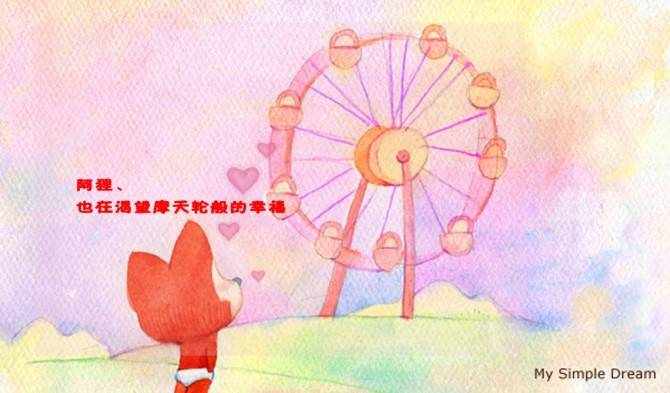

<!--
  Generated template for the HelloPage page.

  See http://ionicframework.com/docs/components/#navigation for more info on
  Ionic pages and navigation.
-->

<ion-header>
  <ion-navbar>
    <ion-title>Login</ion-title>
  </ion-navbar>
</ion-header>
 

  <ion-content padding>
      <button ion-button  (click)="goSub()">
          跳转到下一页
         </button>

  <ion-list>
    <ion-item-sliding  *ngFor="let item of list;let i=index">
      <ion-item>
        <ion-avatar item-start>
          
        </ion-avatar>
        <h2>H5大家庭</h2>
      </ion-item>
      <ion-item-options side="right">
        <button ion-button color="primary" (cilck)="goTop(i)"> 置顶</button>
        <button ion-button ios="ios-trash" md="md-trash" (cilck)="del(i)"> 删除</button>
     
      </ion-item-options>
    </ion-item-sliding>
  </ion-list>
   </ion-content>


 